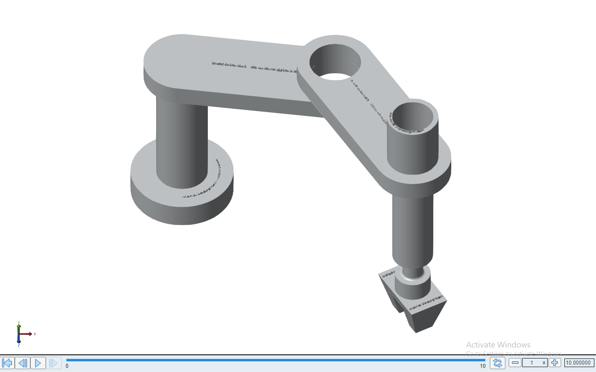

SCARA Manipulator: Dynamics & Simscape Control
SCARA CAD integration, analytical inverse kinematics, trajectory generation, and independent-joint PID tracking in MATLAB/Simulink Simscape Multibody.
Autonomous Systems & Deep Reinforcement Learning Researcher
I am a graduate researcher with a strong background in Mechatronics and Control Theory. My research focuses on developing intelligent, safety-aware decision-making algorithms for autonomous vehicle navigation, multi-agent trajectory forecasting, and deep generative computer vision in dynamic urban environments.
Formal academic training in Mechatronics Engineering, Control Theory, and Machine Learning.
Developing robust algorithms for perception, multi-agent forecasting, and optimal decision-making in dynamic environments.
Designing hybrid Reinforcement Learning (RL) and Imitation Learning formulations with safety guarantees for vehicle motion planning and obstacle avoidance in unstructured dynamic urban traffic.
Modeling crowd interactions and social dynamics using Spatio-Temporal Graph Convolutions (ST-GCNN) paired with Conditional VAEs and Gaussian Mixture Model latent spaces.
Object detection with YOLOv11, unpaired image-to-image translation with CycleGAN, and generative text-to-video experiments.
Comparative histopathology image classification using Vision Transformers (ViT) and Deep Residual Networks (ResNet), with careful evaluation of model behavior and limitations.
Open-source implementations, experiments, visual results, and technical documentation across AI, robotics, and control.

SCARA CAD integration, analytical inverse kinematics, trajectory generation, and independent-joint PID tracking in MATLAB/Simulink Simscape Multibody.

Multi-agent trajectory forecasting using Spatio-Temporal Graph Convolutions and CVAE-GMM multimodal latent space sampling for anticipating diverse human navigation choices in autonomous driving.

A DQN agent that selects discrete textual prompt modifiers for a frozen TinyLlama-1.1B model on BoolQ, balancing answer correctness and response length.

Two-class YOLOv11 helmet detection paired with text-to-video generation and framewise inference on four short synthetic rider clips.

Bridging classical tabular methods to continuous state spaces via Linear Semi-Gradient TD(0), Tile Coding, and Deep Q-Networks (DQN) with experience replay and target networks.

Deep generative image-to-image translation pipeline implementing dual PatchGAN discriminators with ResNet-based cycle-consistency and identity loss constraints on Horse2Zebra.

Direct Q-learning updates combined with simulated model-based planning in a deterministic 5×5 Grid World.

Comparative five-class histopathology image classification study benchmarking Vision Transformers (ViT-B/16) against ResNet-50 with transfer learning.

Exact Markov Decision Process resolution via Policy Iteration, Policy Evaluation, and Value Iteration for Poisson-distributed resource allocation and inventory management.

Comprehensive empirical evaluation of ε-Greedy, Upper Confidence Bound (UCB), and Stochastic Gradient exploration strategies on custom obstacle GridWorld MDPs.
GridWorld comparison of first-visit Monte Carlo and TD(0) prediction with SARSA and Q-Learning control.

Comparative study analyzing constant step-size parameter (exponential recency-weighted average) versus standard sample-average tracking in non-stationary reward distributions.

Lightweight custom CNN for binary classification of masked and unmasked face images, with confusion-matrix and ROC analysis.

Bag-of-Words sentiment experiment comparing logistic regression, linear SVM, and a decision tree on a balanced single-product review sample.

Exploratory insurance-charge analysis comparing region-only linear regression with a smoker, age, and BMI linear model.

Exploratory analysis of one million synthetic transaction rows, covering class balance, correlations, authentication indicators, and online/offline fraud rates.
Proficiency in deep learning libraries, robotics tools, software engineering, and mathematical foundations.
Academic teaching assistantships and machine learning engineering experience.
I am always open to discussing novel research directions, exchanging ideas on Autonomous Systems & Deep Learning, and actively exploring prospective Ph.D. positions and academic collaboration opportunities.